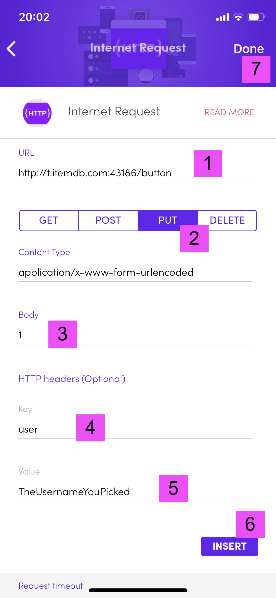

Your username has been registered. Setup the Flic button like this:
- Set URL field to http://t.itemdb.com:43186/button
- Select PUT method
- Set 1 for single click, 2 for double click, and 3 for hold
- Set Key to user
- Set Value to the username you picked
- Click INSERT
- Click DONE
